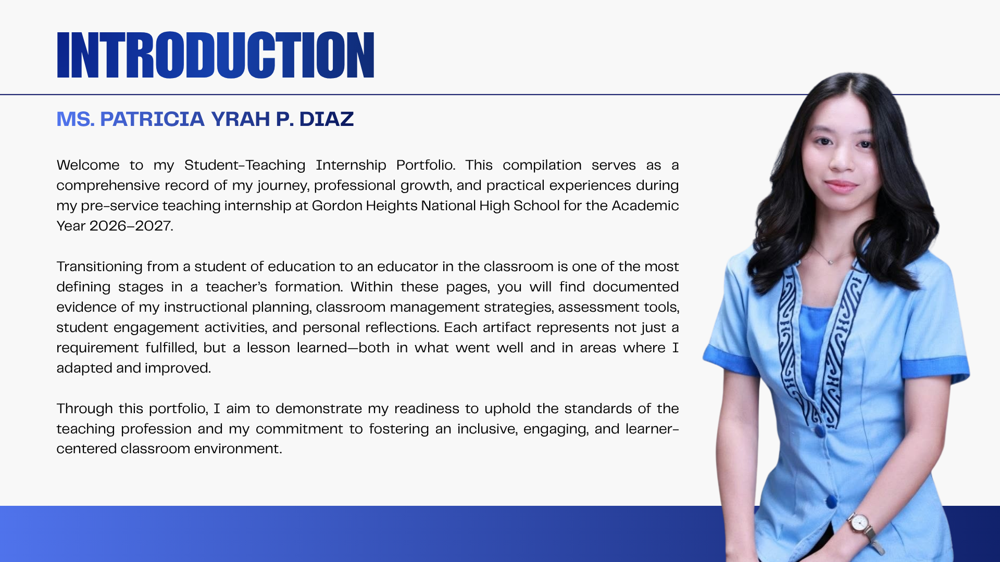

Paper
Acknowledgment
I would like to express my deepest gratitude to the people who made my student-teaching internship a transformative and fulfilling experience.
First and foremost, I thank the Almighty for the wisdom, strength, and patience granted to me throughout this journey.
My sincere appreciation goes to Gordon Heights National High School, led by Principal Nenita Avilanes Hibionada, for opening their doors and welcoming me into a supportive learning community. I am especially indebted to my Cooperating Teacher, Ms. Adelyn O. Damasco, whose mentorship, constructive feedback, and daily example of classroom excellence shaped my growth as an educator.
I also extend my heartfelt thanks to my Internship Supervisor, Mr. Guiller T. Marila, and the faculty of the College of Education at Gordon College for equipping me with the theoretical foundation and confidence needed to step into the classroom.
Finally, to my family, friends, and fellow pre-service teachers—especially my fellow English student teachers, thank you for your endless encouragement, late-night listening ears, and unwavering belief in my dream of becoming a teacher.
Dedication
This portfolio is lovingly dedicated to:
My parents, Marites Diaz and Jaymark Diaz, whose sacrifices, unconditional love, and tireless support have been the bedrock of every milestone I have achieved.
My friends and church buddies, who have been one of my greatest inspirations to continue my studies and pursue this dream. They are my support systems, joy bringer, and light giver when life seems like gradually losing its light.
To my future students—may I always be the kind of teacher who sees your potential, nurtures your curiosity, and inspires you to believe in yourselves.

About Me
Student-Teacher Biography
Pre-Deployment Seminar